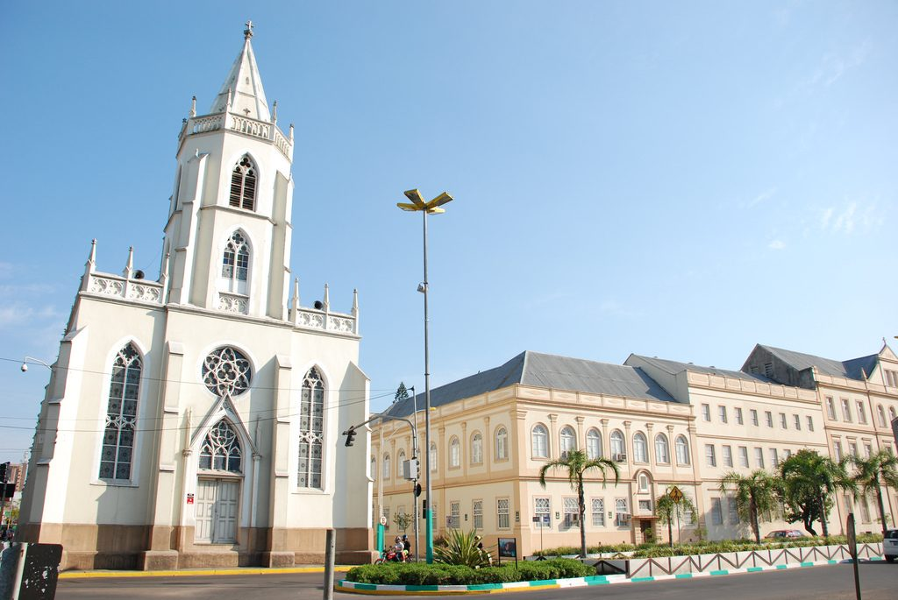
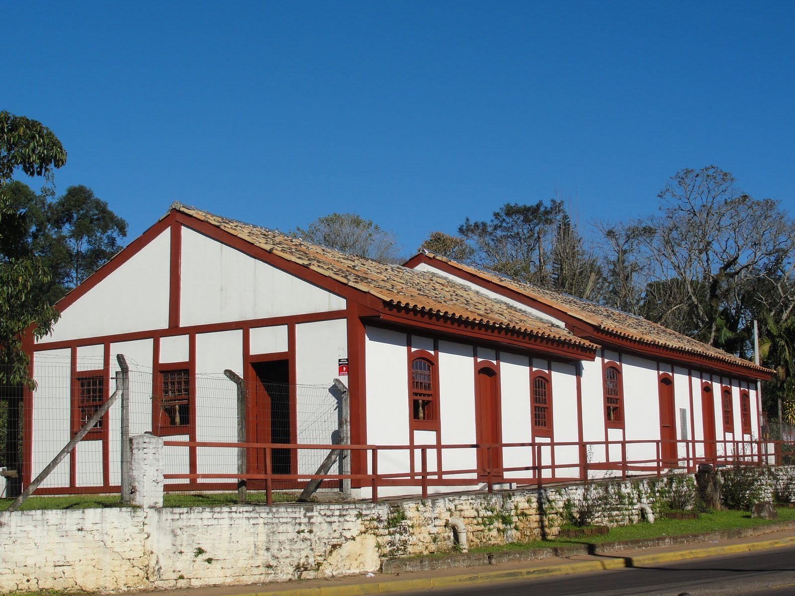

São Leopoldo vista de cima

Campus I Unisinos e a Igreja Matriz

É o local em que, antigamente era a primeira Estação Ferroviária do estado. Foi fundado em 26 de novembro de 1976, com o objetivo de cuidar e preservar as antigas máquinas a vapor e acervos da antiga Ferrovia (registros de funcionários, cheques, vagões, carros, livros, revistas, telégrafos, uniformes, entre outros).
É a praça mais antiga da cidade e foi fundada em comemoração ao centenário da imigração alemã, as margens do Rio dos Sinos, em 1824 -1924, é um marco da cidade e sua história de construção se funde com a história da própria cidade.
Bom, se você é uma pessoa religiosa e decidiu viajar para São Leopoldo o Santuário Sagrado Coração de Jesus é o lugar e ponto turístico mais recomendado. Construído entre os anos 1958 e 1968, é o lugar que abriga o túmulo do falecido Padre Reus e recebe vários religiosos todos os anos
O Jardim Botânico de São Leopoldo, criado em 1996, é uma área de preservação e educação ambiental localizada no Rio Grande do Sul. Com o objetivo de conservar a flora local e promover a sustentabilidade, o jardim abriga uma rica diversidade de plantas nativas e exóticas.
A República da Cerveja foi um movimento cultural que ocorreu em São Leopoldo (RS) entre os anos 1997 e 2003. Seu nome faz referência a uma "comuna" informal, onde jovens e estudantes se reuniam para beber cerveja, discutir ideias e celebrar a liberdade.
Churrascaria Shneider , é conhecido pela sua comida típica alemã e gaúcha. Oferece pratos como galeto, linguiças, chucrute, feijão tropeiro e outras delícias da culinária regional.
O restaurante Funny Feelings em São Leopoldo (RS) foi um espaço gastronômico e cultural que se destacou por sua proposta irreverente e descontraída, oferecendo não apenas uma experiência culinária, mas também um ambiente artístico e alternativo.
A Unisinos (Universidade do Vale do Rio dos Sinos) é uma universidade privada localizada em São Leopoldo (RS), fundada em 1969. Reconhecida por sua excelência acadêmica, a Unisinos oferece cursos de graduação, pós-graduação e programas de pesquisa em diversas áreas, como humanas, sociais, exatas e biológicas.
Senac: Uma das principais unidades de ensino é o famoso Senac (Serviço Nacional de Aprendizagem Comercial), lá eles oferecem cursos profissionalizantes nas áreas de tecnologia da Informação, Comércio, Comunicação, Gestão, Saúde, entre outras.